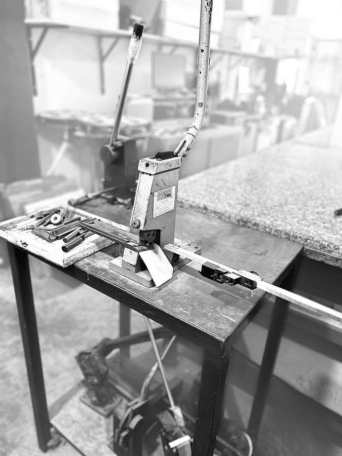
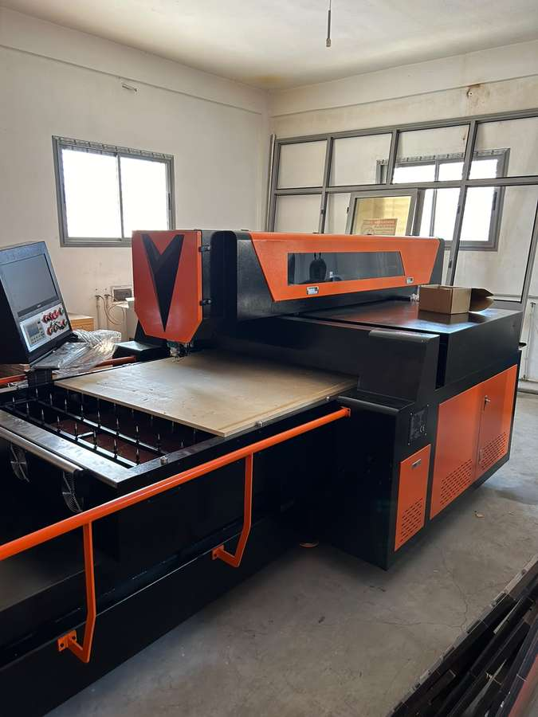

Atelier de découpe & formes sur mesure — Mégrine, Tunisie
Des lignes de coupe pensées au dixième de millimètre.
PRIMO forme conçoit et fabrique des formes de découpe sur mesure pour l'emballage, le carton, le cuir et l'industrie — de la première ébauche jusqu'à la série, avec un contrôle de tolérance à chaque poste.
PRIMO forme, l'atelier qui donne forme à vos idées.
PRIMO forme accompagne les industriels et les imprimeurs dans la conception de formes de découpe, d'outillages et de gabarits sur mesure. Chaque commande part d'un plan technique, pas d'un croquis : nous lisons vos tolérances, vos matières et vos volumes avant de couper la première ligne.
Notre atelier de Mégrine combine découpe laser, usinage bois numérique et cintrage de précision pour produire des formes fiables, reproductibles d'une série à l'autre — du prototype unitaire à la production continue.
Notre engagement
La meilleure qualité de découpe, portée par le meilleur service — disponibilité constante et livraison tenue, à chaque commande.
Ce que nous faisons.
Trois façons de nous découvrir — nos produits, nos services, et le travail déjà réalisé en atelier.
Un parc machine pensé pour la précision.
Neuf machines, trois métiers : échantillonner, découper, cintrer — tout sous le même toit, pour ne jamais dépendre d'un sous-traitant.

Machine d'échantillonnage
Dédiée à la validation de chaque prototype avant lancement en série.

Machines laser haute précision
Quatre lignes de découpe dédiées, pour absorber les gros volumes sans sacrifier la précision.
Cintreuses numériques de haute qualité
Cintrage programmable et reproductible, sans dérive de tolérance d'une série à l'autre.
Un projet, un plan à découper ?
Décrivez votre besoin — matière, quantité, délai — nous revenons vers vous avec un devis chiffré.